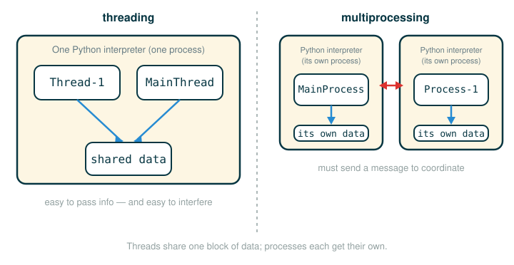

4.8.1 Parallelism in Python
By the end of this lesson you will be able to do four things. You will be able to say what it means for a program to do more than one thing at a time, and tell parallelism apart from concurrency. You will be able to explain why pure functions are the easiest kind of code to run at the same time. You will know the two tools Python gives you for this, threading and multiprocessing, and what makes them different. And you will be able to read the two official hello-world programs that launch a second thread and a second process, including the surprising way their output can appear.
This lesson does not yet ask you to write correct parallel programs. It builds the vocabulary and the mental model. The next several lessons in this section take that model and show, step by step, what goes wrong when two tasks touch the same data.
A Busy Kitchen With More Than One Cook
Imagine one cook making dinner alone. The cook chops vegetables, then boils water, then stirs the pot, one task after another. Now add a second cook. If one chops vegetables while the other boils water, dinner finishes sooner, because two useful things happen at the same instant. That is the promise of parallel computing: more workers, more done per minute.
But a second cook introduces a new hazard. Suppose both cooks reach for the same order ticket and scribble on it at the same moment. Now the ticket says something neither cook intended, and the order comes out wrong. Speed went up, but correctness went down.
That tension is the whole point of this section. Splitting work across many workers can make a program faster, but the moment those workers share something they can both change, the program can quietly become wrong. This first lesson is about the workers themselves. Later lessons are about the order ticket.
Why Programs Started Needing This
For many years, computers got faster on their own. A processor has a clock frequency, the rate at which it performs basic operations, and for decades that frequency kept climbing. A program written one year ran faster the next year on new hardware, with no change to the code.
In the mid-2000s that free speedup ended. Pushing the clock frequency higher ran into power and thermal constraints: a faster single core simply drew too much power and produced too much heat. So chip makers changed strategy. Instead of one ever-faster core, they put multiple cores inside a single processor. A core is the part of a processor that actually carries out instructions.
This shift moved work onto the programmer. A program that does everything as one long sequence uses only one core; the other cores sit idle. To get faster on modern hardware, a program has to expose work that can run on several cores at once.
Parallelism and Concurrency
Two words sound alike and are easy to confuse. Hold them apart.
Parallelism means work actually happens at the same time, literally in the same instant, usually because there are multiple cores doing it.
Concurrency means a program is organized as multiple tasks that can each make progress over a stretch of time, whether or not they ever run in the same instant.
Concurrency does not require multiple cores. Even a single-core machine can run several programs that feel simultaneous, through context switching: the system rapidly switches between different tasks without waiting for any one of them to finish. Each task gets a sliver of time, then the next task gets a sliver, fast enough that to a human it looks like everything is happening together. A single core is still doing exactly one small step at a time; it is just changing its mind very quickly about which task that step belongs to.
So the older single-core personal computer already ran programs concurrently. The newer multi-core machine can additionally run them in parallel. The catch is that the hardware only helps if the program is written to expose independent work in the first place.
Pure Functions Are Easier to Parallelize
Recall the idea of a pure function from earlier chapters: it depends only on its arguments and changes nothing outside itself. It reads its inputs, computes, and returns a value. It keeps no hidden notebook.
Pure functions give you a property called referential transparency. That phrase means an expression can be replaced by its value, and the value by the expression, without changing how the program behaves. Here is a deliberately tiny illustration of the idea. This is my own simplest-case example, not from the source text:
square(5)
can be replaced everywhere by
25Because square is pure, anywhere the program would have computed square(5) it could instead just use 25, and nothing downstream can tell the difference. Now stretch that to two separate expressions. If neither expression depends on the other, and neither leaves a hidden mark, then a computer can evaluate them in either order, or at the very same time, and still get the same answer. There is no shared order ticket for them to ruin. Referential transparency is exactly what lets expressions that do not depend on each other be evaluated in parallel.
This is why the MapReduce framework from Section 4.7 parallelizes so cleanly. A map task is supposed to behave like a pure computation over its slice of input, so one map task can run on one machine while another map task runs on a different machine, with no coordination between them.
The catch is that pure, MapReduce-shaped work does not cover everything. Not all problems can be solved efficiently with functional programming alone. The Berkeley View project surveyed scientific and engineering computing and identified a set of common computational patterns (thirteen in their survey, though the exact count is not something to memorize), and many of the remaining ones require tasks to share and change state as they run. The rest of this section is about exactly that harder case: what happens when parallel tasks share mutable data.
Two Python Tools
Python gives you two ways to run work at the same time: threading and multiprocessing. They differ in one decision that shapes everything else, namely whether the workers share memory.
threading:
multiple threads of execution inside one Python interpreter
each thread runs code independently, but they share the same data
multiprocessing:
multiple Python interpreters, each its own process
each process runs code independently, and they do not generally share dataA thread is like a second cook reading and writing the same order ticket you are using. Because the ticket is shared, passing information back and forth is effortless, but so is accidental interference. A process is like a second cook in a separate kitchen with their own ticket book. It is much harder for them to smudge your ticket by accident, but now, if you need to coordinate, you have to actually send a message across.

One Python-specific detail matters before you read the examples. In CPython, the main implementation of Python, the interpreter only interprets code in one thread at a time. So two Python threads do not actually execute Python instructions in the same instant. Threads are still genuinely useful when the work spends its time on operations external to the interpreter, such as writing to a file or accessing the network, because the program can wait on several of those at once. But when you want to use multiple cores for Python computation itself, processes are the more direct tool, because each process has its own interpreter.
Following the Line: Launching a Thread
Before the official example, look closely at the single line that creates a worker thread. Read it one token at a time, then read the final row for what the whole line does.
other = threading.Thread(target=thread_say_hello, args=())
├─ other ................. the name that will refer to the new thread object
├─ = ..................... binds that name to the object on the right
├─ threading.Thread ...... the constructor that builds a Thread object
├─ ( ..................... begins the constructor's arguments
├─ target=thread_say_hello the function this new thread should run
├─ , ..................... separates the arguments
├─ args=() ............... the (empty) tuple of arguments to pass to that function
├─ ) ..................... ends the constructor's arguments
└─ result ................ a Thread object, not yet running, bound to otherNotice the final row carefully: building the Thread object does not start it. The object exists, but no second line of work has begun yet. Starting it is a separate step, which is its own line:
other.start()
├─ other ................. the Thread object built on the line above
├─ . ..................... reaches for one of that object's methods
├─ start ................. the method that makes the thread eligible to run
├─ ( ) ................... calls the method with no arguments
└─ action ................ marks other as ready; the scheduler may run it any time afterThe word to dwell on is eligible. After start(), the new thread is allowed to run, but Python does not stop and run it to completion first. The main thread keeps going on its very next line, and from that point two threads are both ready. Which one actually runs next, and in what order their effects appear, is up to the scheduler.
The Official Threading Example
Here is the official hello-world for threads, exactly as it appears in the source, as an interactive session.
>>> import threading
>>> def thread_hello():
other = threading.Thread(target=thread_say_hello, args=())
other.start()
thread_say_hello()
>>> def thread_say_hello():
print('hello from', threading.current_thread().name)
>>> thread_hello()
hello from Thread-1
hello from MainThreadWalk the logic. Calling thread_hello builds a second thread whose job is to run thread_say_hello, starts it, and then calls thread_say_hello directly in the main thread too. So thread_say_hello runs twice, once in each thread. Each call prints a greeting that includes threading.current_thread().name, the name of whichever thread is running that call. The newly created thread reports the name Thread-1; the original thread reports the name MainThread.
The crucial observation is about the two output lines. Their order is not guaranteed. Nothing in the program forces the new thread to print before the main thread, or the other way around. Here the new thread happened to win, so hello from Thread-1 printed first, but a different run could print hello from MainThread first. When you write start(), you are not saying "do this now and finish it"; you are saying "this is also ready," and the order of what you see is left to the scheduler.
Following the Line: Launching a Process
The process version is built the same way, with a constructor and a start. Read the construction line by its tokens.
other = multiprocessing.Process(target=process_say_hello, args=())
├─ other ......................... the name for the new process object
├─ = ............................. binds that name to the object on the right
├─ multiprocessing.Process ....... the constructor that builds a Process object
├─ ( ............................. begins the constructor's arguments
├─ target=process_say_hello ...... the function the new process should run
├─ , ............................. separates the arguments
├─ args=() ....................... the (empty) tuple of arguments to pass to it
├─ ) ............................. ends the constructor's arguments
└─ result ........................ a Process object, in its own interpreter, bound to otherThe shape is identical to the thread version. The one difference that matters lives in the final row: this object is a whole separate interpreter, not another thread inside the current one. That is why processes do not automatically share your data, and it is also why the output below behaves a little strangely.
The Official Multiprocessing Example
Here is the official hello-world for processes, exactly as it appears in the source.
>>> import multiprocessing
>>> def process_hello():
other = multiprocessing.Process(target=process_say_hello, args=())
other.start()
process_say_hello()
>>> def process_say_hello():
print('hello from', multiprocessing.current_process().name)
>>> process_hello()
hello from MainProcess
>>> hello from Process-1The structure mirrors the threading example exactly. Calling process_hello builds a second process to run process_say_hello, starts it, and also calls process_say_hello in the main process. Each call prints a greeting with multiprocessing.current_process().name. The main process reports the name MainProcess; the new process reports the name Process-1.
Look at the last two lines, because the oddity there is part of the lesson. After hello from MainProcess prints, you see a >>> prompt, and then hello from Process-1 prints after it. That is not a typo. The display is shared between the two processes, and the timing worked out so that the interactive prompt came back before the second process got around to printing. The greeting from Process-1 then landed on the line after the prompt. Even output, the most innocent-looking thing a program does, is shared state whose timing you do not fully control.
A Slow-Motion Machine Model
Putting the two examples together, here is the model to carry forward. When Python reaches other.start(), it does not mean "run the entire other task right now, then come back." It means "make this other task eligible to run." After that, the operating system and the interpreter decide when each task actually gets time on a core.
Trace the threading example as a sequence of events:
- The main thread calls
thread_hello. - It builds a second thread whose target is
thread_say_hello. - It calls
other.start(), which marks the second thread as ready. The second thread does not necessarily run yet. - The main thread continues to its next line and calls
thread_say_helloitself. - Now both threads are ready, and the scheduler interleaves them however it likes.
- The two greetings print, and their order can differ from run to run.
The single most important idea to take away is in steps 5 and 6: once a second task exists and has been started, the final order of visible effects depends on the schedule, not on the order you wrote the lines.
⚠Common Beginner Traps
- Thinking concurrency always means literal simultaneity. A single core can interleave many tasks by switching quickly between them, without ever running two Python steps in the same instant.
- Confusing parallelism and concurrency. Parallelism is work truly overlapping in time on multiple cores; concurrency is a program structured as several tasks that make progress over time, which a single core can do by context switching.
- Reading
start()as "finish the new thread now." It only marks the new thread as eligible to run; the main thread keeps going immediately. - Expecting a fixed output order from the hello examples. Nothing synchronizes the two greetings, so either one can print first.
- Assuming threads and processes share data the same way. Threads share the one interpreter's memory; separate processes do not generally share data and must communicate explicitly.
- Forgetting that printed output is shared state too. The stray
>>>in the multiprocessing example is exactly that surprise showing up. - Believing CPython threads run Python code truly in parallel. CPython interprets Python code in one thread at a time; threads help most when the work waits on things outside the interpreter, like files or the network.
✓Check Your Understanding
- What is the difference between parallelism and concurrency?
- What is context switching, and why does it let a single-core machine feel like it runs several programs at once?
- Why are pure functions easier to run in parallel? Use the term referential transparency in your answer.
- Using the
run(name, step)schedule model from the Step-Through Checkpoint at the end of this lesson (you may want to read it first), suppose a particular schedule happens to be[("other", "say hello"), ("main", "create other"), ("main", "start other"), ("main", "say hello")]. What four lines does the program print, in order? - Name one concrete difference between a thread and a process in Python.
- In CPython, are two Python threads actually running Python code in the same instant? When are threads still worth using?
Show the answers
- Parallelism means work happens at literally the same time, usually across multiple cores. Concurrency means a program is structured as multiple tasks that each make progress over time, which can happen even on a single core.
- Context switching is rapidly switching between tasks without waiting for any one to finish. Each task gets a sliver of time in turn, fast enough that the tasks appear to run together even though one core handles one step at a time.
- Pure functions have referential transparency: an expression can be replaced by its value without changing the program. So two independent pure expressions can be evaluated in any order or at the same time, because neither one changes hidden state the other depends on.
- The schedule is walked in list order, so the four lines print in that same order:
other -> say hello, thenmain -> create other, thenmain -> start other, thenmain -> say hello. The order of effects follows the schedule, not the order the functions were defined. - Threads share the same data inside a single interpreter; separate processes each have their own interpreter and do not generally share data, so they must communicate explicitly.
- No. In CPython the interpreter runs Python code in only one thread at a time. Threads are still worth using when the work waits on operations external to the interpreter, such as writing to a file or accessing the network.
§Summary
Computers stopped getting faster on a single core in the mid-2000s because of power and thermal limits, so hardware moved to multiple cores, and using that hardware now means writing programs that expose work which can run at the same time. Parallelism is work overlapping in the same instant; concurrency is a program organized as several tasks making progress over time, which even one core can fake through context switching. Pure functions are the easiest work to parallelize because their referential transparency lets independent expressions run in any order. Python offers two tools: threading, where threads share one interpreter's data and communication is easy but interference is easy too, and multiprocessing, where separate processes keep their data apart and must communicate explicitly. The official hello-world programs show a second thread and a second process being created and started, and both show that once a task is merely started, the order of its visible effects, including printed output, is decided by the scheduler rather than by the order you wrote the lines. The rest of this section studies the hard part this lesson set up: what happens when tasks share mutable state.
▶Step-Through Checkpoint
Real threads do not behave the same way twice, which makes them hard to follow one step at a time. So this checkpoint does not create real threads. Instead it models the one idea that matters most from this lesson: once a second task exists, the final order of effects is decided by a schedule. Here the schedule is written out explicitly as a list, so you can step through it and watch the interleaving happen in a fixed, repeatable way. Stepping through it draws the environment diagram of that fixed schedule, one line at a time. Read the code below first, then walk through what each step does.
# (1)
def run(name, step):
return name + " -> " + step
main_steps = ["create other", "start other", "say hello"]
other_steps = ["say hello"]
schedule = [
("main", main_steps[0]),
("main", main_steps[1]),
("other", other_steps[0]),
("main", main_steps[2]),
]
output = []
for who, step in schedule:
output.append(run(who, step))
for line in output:
print(line)
Here is what each pass of the top-level for loop does. It binds who and step in the global frame to the "main" or "other" task whose turn it is. It then calls run, which opens and closes a frame binding its own parameters name and step (with name receiving the value of who) and returns the formatted line. The shared output list on the heap grows one line at a time, so you can see exactly which task's effect lands at each point in the interleaving.
Step through it above and advance one line at a time. Watch how the schedule list, not the order the functions were defined, decides which task acts next. Then change the order of the entries in schedule and predict the new output before you run it. That is the whole intuition for this section: with one task there is only one possible order, but the moment a second task is started, the order you actually see is whatever the schedule produces.